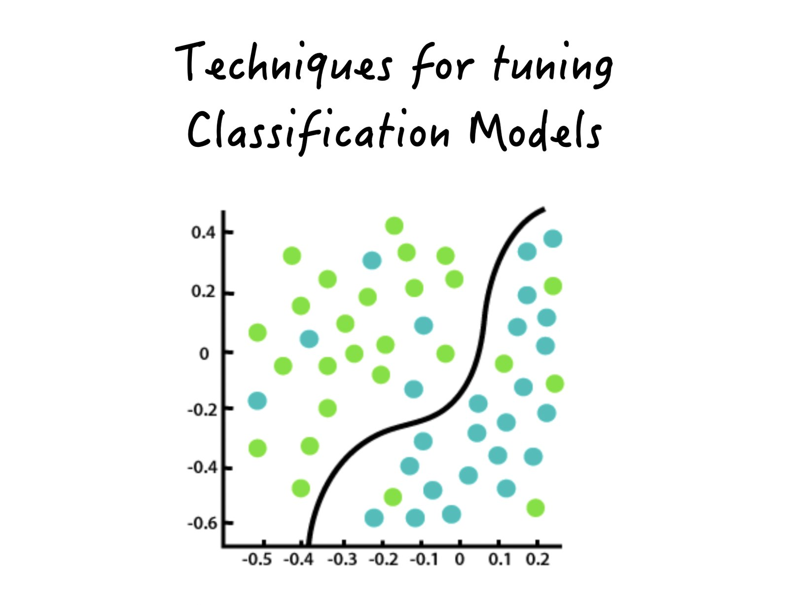
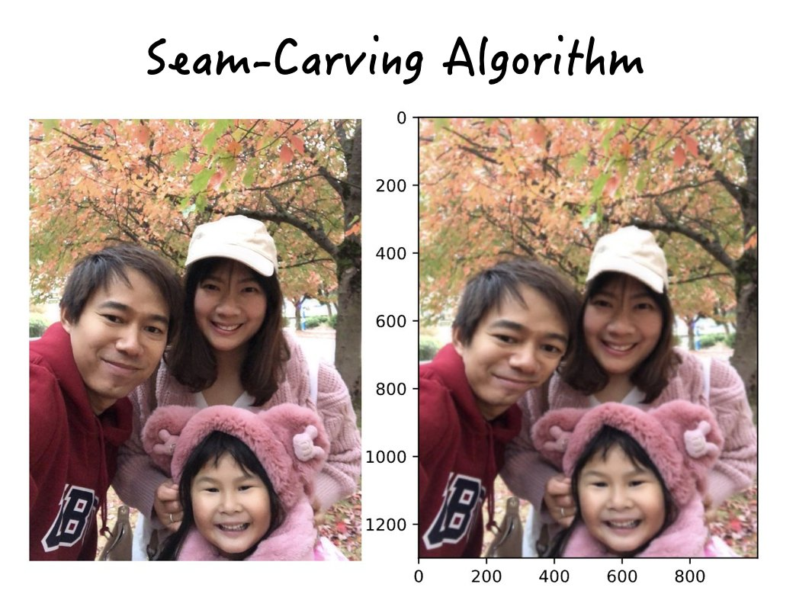
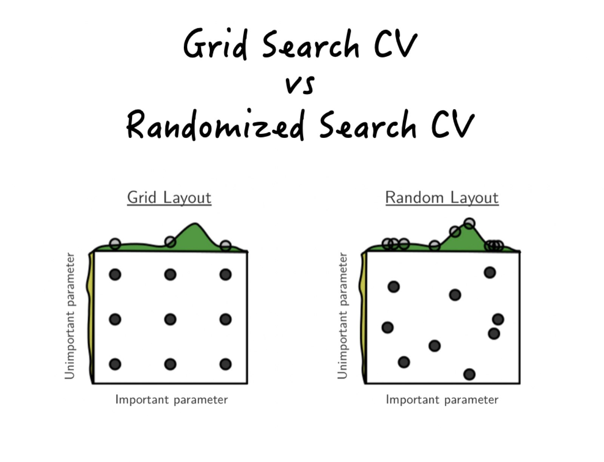
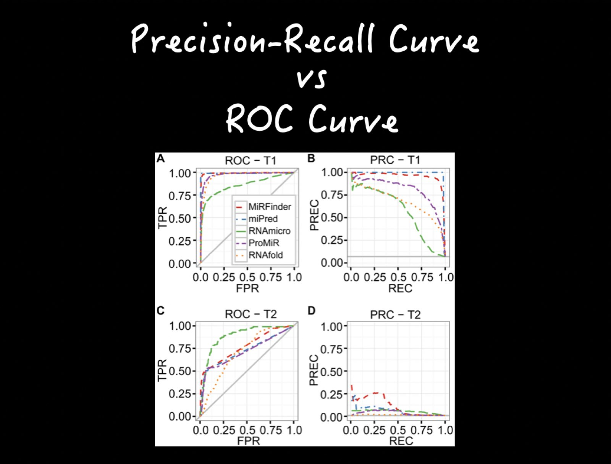
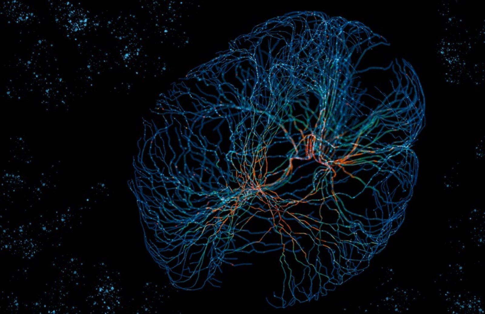

Projects
Machine learning, MLOps and statistics write-ups.

Operationalizing ML Models with GCP Vertex AI
Taking models from notebook to production on Google Cloud Vertex AI, so the organization actually gets value from them.

Deploy ML Models with Docker
Packaging a scikit-learn sentiment model and its Flask API into a portable container.

Deploy ML Models with Flask
Serving a trained model behind a lightweight Flask REST API.
Deploy ML Models with FastAPI
Building a fast, typed prediction API with FastAPI, because a model only matters once it is deployed.

Tuning Classifiers on Imbalanced Data
Practical techniques for classification problems where one class vastly outnumbers the other.

Rating Prediction of Airbnb Listings
Predicting how popular an Airbnb listing will be from its features.

EPL Ranking with Bayesian Inference
Rating Premier League teams and forecasting the final table with a Bayesian model.
My GAN Wife
A generative adversarial network project for image generation.

Seam Carving and Its Implementations
Content-aware image resizing with dynamic programming.

GridSearchCV versus RandomizedSearchCV
Comparing the two most popular ways to tune hyperparameters, and when each one makes sense.

Precision-Recall vs ROC Curves on Imbalanced Data
Why the ROC curve can mislead on imbalanced data, and what the precision-recall curve shows instead.

Neural Networks and Their Applications
How neural networks work and where they are used, from image recognition to medical image analysis.
Common Mistakes in SQL
Pitfalls to avoid when pulling, joining and manipulating data across tables with SQL.